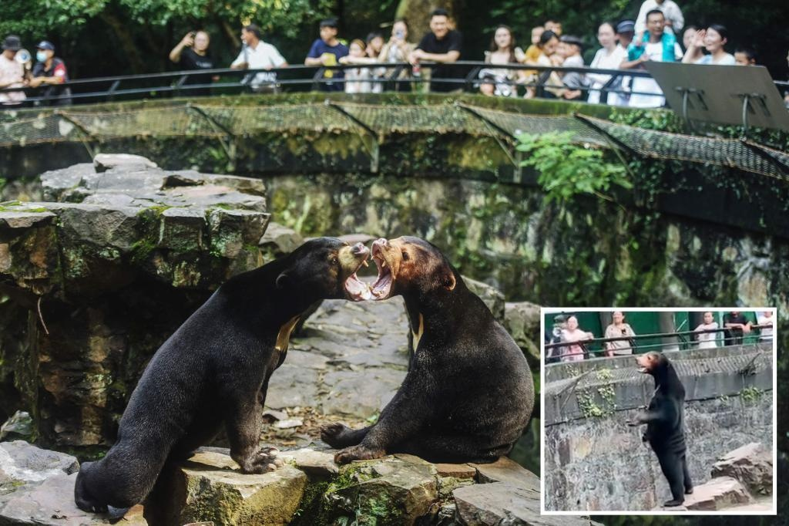

Chinese zoo drawing 20,000 visitors a day over 'fake' bearA zoo in China has been drawing 20,000 visitors a day after a video went viral showing one of its bears standing on its hind legs — leading many people to believe that the furry creature is actually just a human in a costume. There has been a 30% increase in visitor numbers at Hangzhou Zoo in the eastern Zhejiang province a day after the video of the Malaysian sun bear named Angela standing remarkably upright in its enclosure lit up Chinese social media over the weekend, reported Chao News. “After seeing this bear standing up on the internet, I wanted to see how it looks in real life, so I came here,” said a man with the last name You, who added that he did not fully believe the video he saw online. Many social media users who watched the video shot at the zoo commented on the bear’s suspiciously skinny legs and folds of fur-covered skin that made Angela seems as if it was a person sporting an ill-fitting bear suit. “After we saw the video on the internet, we specially took the high-speed train from Suzhou to come over to see the bear,” another visitor, Qian Ming, told a Hangzhou TV station. “We traveled overnight last night to get here. The bears are so cute.” In the viral clip posted last Thursday, the sun bear can be seen standing on its hind legs and stretching its neck out as it stares at visitors watching from outside its enclosure, before sitting back down. “If this is fake it deserves an Oscar for special effects,” commented one user on the Weibo microblog platform. The furor surrounding the sun bear has forced the zoo to deny that Angela was a person in a costume in posts on its official WeChat account and in interviews with local media outlets, insisting that the critter is “definitely not a human.” “Our zoo is government-run, so that kind of situation would not happen,” a staffer said, according to local media. A statement released by the zoo, written as if it was from Angela, said that the rumors surrounding the Malaysian sun bear were rooted in a misunderstanding. “Some people think I stand like a person. It seems you don’t understand me very well,” the note said. Zoo workers also pointed out that a person wearing a furry bear suit would not have survived long in the region’s 100-degree summer heat. “If you put on a fur suit, you certainly couldn’t last more than a few minutes without lying down,” an official said. Animal rights group PETA said this incident highlights how all zoo animals, including Angela the bear, should be moved to sanctuaries and wildlife reserves that “prioritize the well-being of animals.” “These highly intelligent and social beings deserve to live freely and thrive in their natural environment, not used as mere spectacles for human entertainment,” Jason Baker, PETA Asia vice president, said in a statement Tuesday. Malaysian sun bears, the smallest bears in the world, are only about the size of a large dog. At their largest, they are about 4 feet, 2 inches tall while standing on their hind legs, compared to grizzly bears, which can be up to 9 feet tall. This is not the first time a Chinese zoo has been suspected of deceiving its visitors. Prior allegations included passing off donkeys as zebras and painting dogs to resemble wolves. With Post wires Video of the bear drew speculation that the animal was actually a human wearing a bear costume. Shanghai Daily/X Hangzhou Zoo has been inundated with 20,000 visitors a day after the video of Angela the bear has gone viral. Wikipedia / Huandy618 Zoo staff have insisted the bear is real and arranged visits for journalists to view the animal. Shanghai Daily/X Zoo workers have been forced to deny that one of their sun bears is a person dressed in a bear suit. AFP via Getty Images Malaysian sun bears, the smallest bears in the world, are only about the size of a large dog. AFP via Getty Images Sun bears are about 50 inches tall while standing on their hind legs. AFP via Getty Images Zoo officials said it would be too hot for a human inside a bear costume. Shanghai Daily/X |
 |